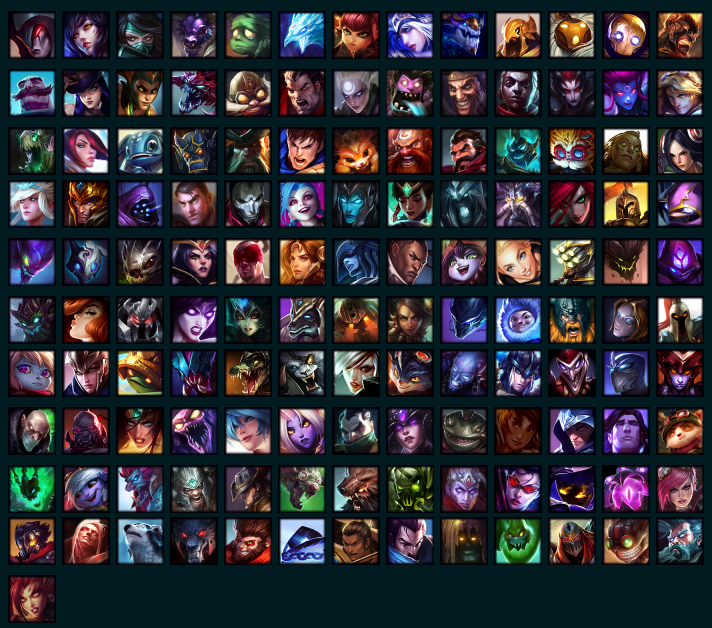
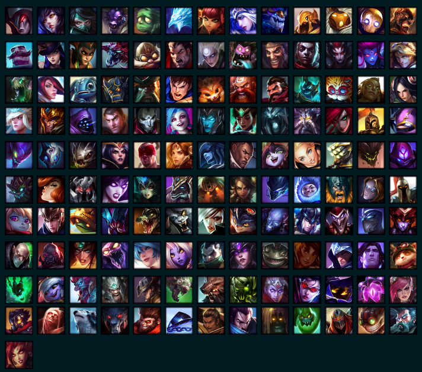

League Of Legends
Campeones:
Cuando damos una mirada al pasado, vemos que solo han pasado 11 años desde el inicio de este gran juego, y, lo que comenzó con un juego con graficos antiguos, una jugabilidad espantosa y teniendo unicamente 40 personajes jugables, se convirtió en uno de los MOBAS mas famosos y con mejores graficos en la historia, podemos ver que en esos 11 años han mejorado y se han adaptado muy bien a los cambios y exigencias de los nuevos tiempos y de sus jugadores añadiendo mas campeones jugables, mas opciones de juego, mas skins, etc.
 

Pero no estamos aquí para hablar de su grafica o de sus modos de juego, sino de sus campeones. Algo que comenzó con 40 campeones se ha convertido en un juego con mas de 140 campeones, si vemos en grafica, puede parecer poco 100 campeones en 10 años, pero si nos ponemos a pensar, hicieron 10 campeones por año, sabiendo que cada campeon necesita su tematica, sus habilidades y sobre todo, un lugar en el lore del juego, es totalmente aceptable este plazo de tiempo.
Al comienzo de esta página es explicado que es un juego con posibilidades infinitas, y es así, pues cada campeon tiene una tematica y habilidades totalmente distintas a los demás y eso lo hace unico, si eso le añadimos que, dependiendo de que objetos le añadas funciona de una forma u otra, tienes una combinacion de jugabilidad y complejidad unica en cada partida.
Runas:
Las Runas es aquello que se añadirá a los personajes durante la selección que se escogerán para la partida. Se puede adaptar a los campeones a cada partida y determinará la forma de jugar. Hay 5 árboles de runas que son las primarias y seguidamente un árbol secundario para combinar.
A partir de la Pretemporada Ocho, las Runas y Maestrías fueron reemplazadas con un nuevo sistema llamado Runas Reforjadas. El sistema permite a los jugadores personalizar a sus campeones antes de que inicie la partida al elegir entre varias Runas, que agregan o mejoran las estadísticas y habilidades de los campeones.